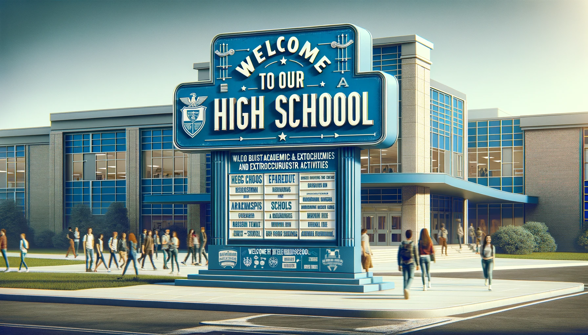
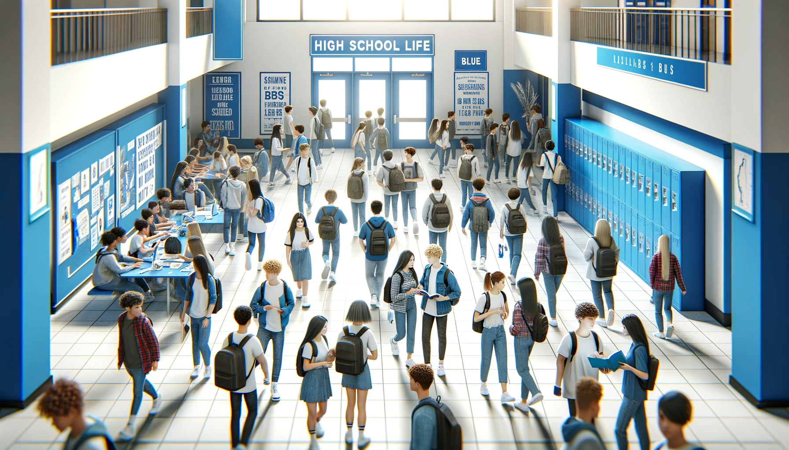
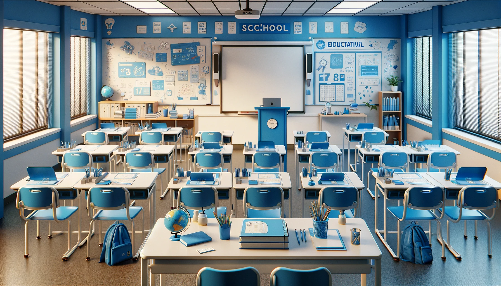

La Martinière Monplaisir
Suivre des études dans cet établissement, c'est trouver une ambiance et des conditions de travail propices à exprimer ses qualités et développer ses compétences pour réussir.
-
LYCEE
Notre mission promouvoir l'excellence.
Le second cycle prépare, par voie scolaire, aux baccalauréats généraux et aux baccalauréats technologiques Sciences et Technologies Industrielles et Développement Durable
-
VIE SCOLAIRE
La vie scolaire au lycée ne se limite pas aux leçons apprises dans les manuels. Elle s'exprime aussi à travers les amitiés qui se forment.
Rejoignez-nous pour découvrir comment, ensemble, nous tissons les fils d'une expérience lycéenne enrichissante et mémorable, préparant nos élèves non seulement à réussir académiquement, mais aussi à devenir des citoyens responsables et éclairés
-
FORMATION
Suivre des études dans cet établissement, c'est trouver une
Suivre des études dans cet établissement, c'est trouver une urs avec les plus grandes chances de réussir : équipes pédagogiques expérimentées, équipements performants, et pour ceux qui le souhaitent, un internat entièrement rénové.
Portes ouvertes prochainements:
Samedi 15 Décembre à partir de 9h
Comment y aller?
-
Lycée la Martinière - Monplaisir 41 Rue Antoine Lumière 69372 LYON CEDEX 08
-
Téléphone : +33 4 78 78 31 00
-
Par email
Intendance
-
Internat

Suivre des études dans cet établissement, c'est trouver une
-
Restauration
Suivre des études dans cet établissement, c'est trouver une suite